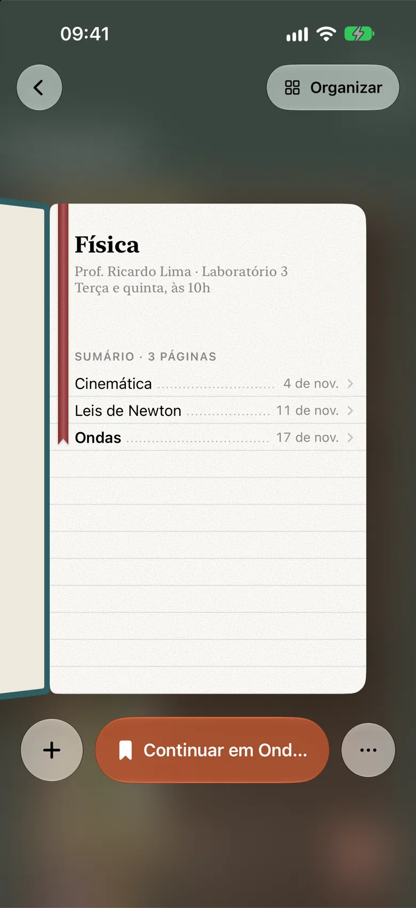
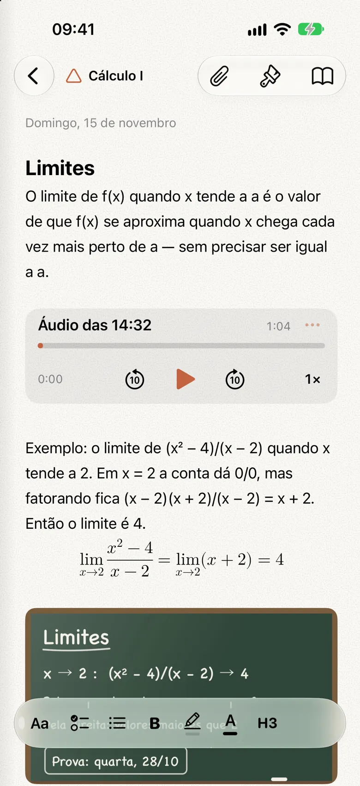
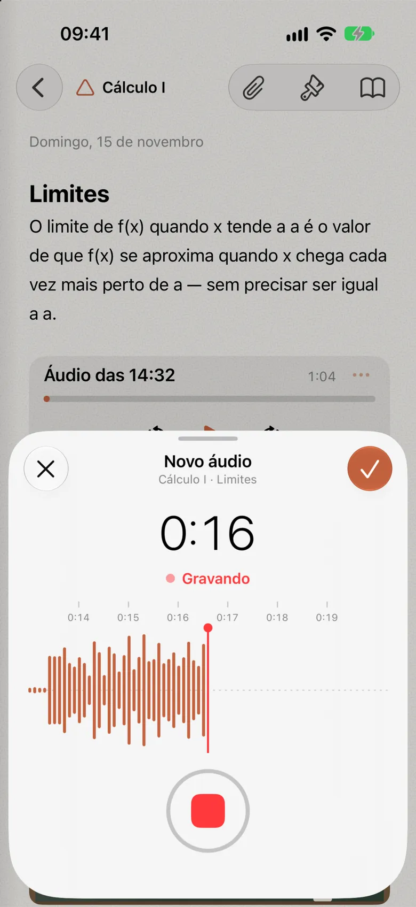
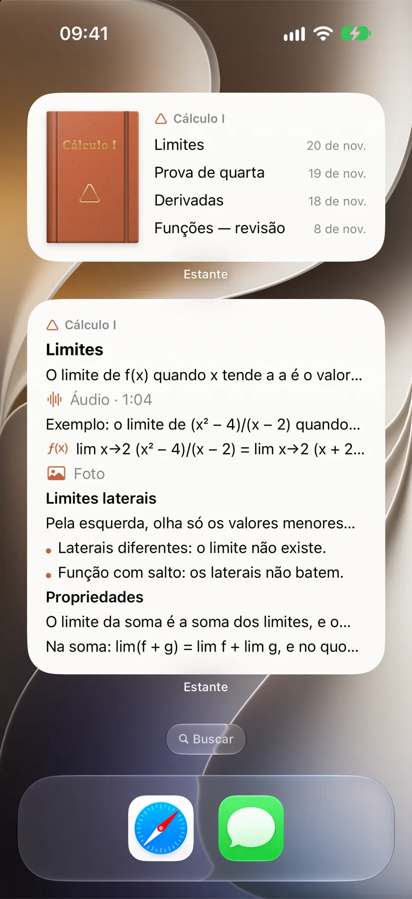

Como funciona a estante
A estante guarda os seus cadernos. Cada prateleira é um nicho, como Faculdade, Trabalho ou Casa. Em cada nicho, você coloca um caderno para cada assunto.
- Toque num caderno e ele sai da prateleira, aberto no sumário, com a lista das páginas.
- Toque duas vezes para abrir direto na página onde você parou. A fita vermelha marca o lugar.
- Escolha a capa entre seis modelos, com o ícone e a cor que você quiser.
- Tranque um caderno, e ele só abre com o Face ID ou com o código do iPhone.
- O que você apaga fica 30 dias na lixeira, no pé da estante. Nesse tempo, dá para trazer de volta.

Como escrever
A primeira linha vira o nome da página. Depois é só escrever. Tudo se salva sozinho, não precisa apertar nada.
- Títulos
- Listas
- Tarefas
- Negrito e itálico
- Canetas coloridas
- Marca-textos
- Citações
- Destaques
- Blocos que abrem e fecham
- Fórmulas
- Código
- O papel pode ser pautado, quadriculado, pontilhado ou liso, em oito cores. Cada página tem o seu.
- A barra de baixo mostra as ferramentas que você escolher.
- O modo de leitura deixa a página só para ler, sem o teclado.
- A busca acha cadernos, nichos e qualquer palavra escrita nas páginas.

Fotos e áudios
O clipe, no alto da página, coloca fotos e áudios no meio do que você escreve.
- Grave uma aula, uma reunião ou uma ideia. Pode bloquear a tela, que a gravação continua.
- Fotografe o quadro e ajuste o corte antes de colocar na página.
- Digitalize uma folha, que fica reta, como num scanner.
- Selecione e copie o texto que aparece numa foto, ou coloque esse texto na página.


Widgets e atalhos
Na Tela de Início e na Tela Bloqueada, os widgets do Estante mostram uma página, um caderno, as suas tarefas, o calendário ou o lugar onde você parou.
- Na Central de Controle, os botões Nova página e Gravar, que já abre uma página gravando.
- No app Notas, toque em Compartilhar e escolha o Estante. A nota vira uma página no caderno que você escolher.
- Exporte um caderno em PDF ou em texto, para mandar ou imprimir.

Privacidade
Fica no seu iPhone
Os cadernos, as fotos e os áudios ficam guardados no seu iPhone.
Sem conta
Não tem cadastro nem login. É só abrir e escrever.
Nada é coletado
Nós não vemos, não coletamos e não vendemos nada do que você guarda.
Sem propaganda
O app não mostra anúncios e não acompanha o que você faz.
Grátis e Estante Plus
Grátis
3 cadernos e 3 nichos para sempre, com até 5 páginas em cada caderno.
- Escrever, fotos e áudios
- Widgets e atalhos
- Exportar e trancar cadernos
Tudo o que o app faz para escrever é grátis.
Estante Plus
Para quem quer mais:
- Cadernos, nichos e páginas sem limite
- Objetos para enfeitar a estante e um modelo de estante com prateleiras na parede
- Por mêsR$ 14,90
- Por ano, com 7 dias grátisR$ 79,90
- Para sempre, num pagamento sóR$ 199,90
Se você parar de assinar, nada se apaga: você escreve nos 3 primeiros cadernos, e os outros ficam guardados, para voltar com o Plus ou exportar quando quiser.